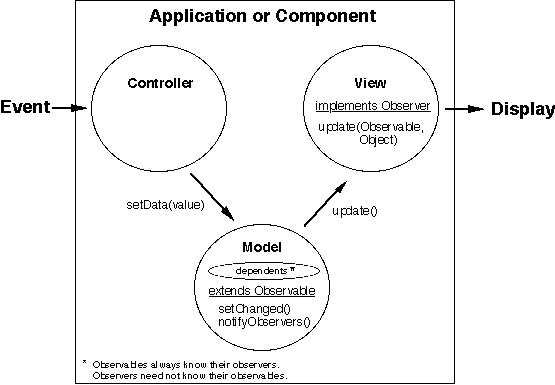

Java MVC Page
The Java Dependency Mechanism and the MVC Approach
http://genome-www.stanford.edu/~sac/java/mvc/intro.html
References:
- Geary, D (1997), Java Report 2(1):31-37.
- Winston, PH and Narasimhan, S (1996), Java Report 1(6):63-68.
- Lewis, S (1995), The Art and Science of Smalltalk, Hewlett-Packard.
- JDK 1.1 docs
- I. Relationships between objects in an application
- Is-A (inheritance)
- Has-A (composition)
- Depends-on (dependency)
- Instance-of (instantiation)
- II. Defininitions
- Model:
- Contains data and core application functionality.
- Independent of the user interface (UI).
- Keywords: data, storage, processing.
- View:
- Displays a model's data to the user.
- Does not understand or act on the data except as necessary to display it.
- Provides the "look" of an application.
- Keywords: output
- Controller:
- Handles UI events and communicates them to the model.
- Usually is specialized to work with a particular view.
- Provides the "feel" of an application.
- Keywords: input
- Observable:
- A java.util class for a model.
- Contains a mechanism for notifying all observers upon changes in a model's data.
- An observable object knows which objects depend on it and notifys them
upon changes to the model's data.
- Key methods: setChanged(), notifyObservers()
- Observer:
- A java.util interface for a view.
- Specifies a mechanism for reacting to changes in an observed model.
- An observer does not (necessarily) know on which objects it depends.
- An observer does have to display anything (ie. provide a view to a model).
- Key methods: update(Observable, Object)
- EventListener:
- A java.util interface for a controller.
- Specifies a mechanism for responding to UI events.
- Available only in JDK 1.1 (see docs about the delegation-based event model).
- Key subclasses: MouseListener, ActionListener, FocusListener et al.
- III. Graphical Illustration of Java Dependency and MVC

- IV. A Generic Scenario
- User generates an event by clicking a button or moving a scroll bar.
- Controller determines what happened and sends a setData(value) message to a model
passing it a value computed based on what happened in the UI.
- Model sets/ alters its data accordingly.
- Model broadcasts to its dependents (views) that it has changed (calls
setChanged() and notifyObservers()).
- Observer (view) receives an update message from the changed model and reacts
appropriately (e.g, redraws its display to reflect the change in the model).
- V. Advantages and Disadvantages
- Advantages of dependency
- Dependents are updated transparently and automatically.
- Allows an application to build its dependency network at run-time.
For any given object, a programmer does not need to know which other objects or how many other
objects depend on it.
- Advantages of MVC
- Permits an orderly, methodical approach to GUI design.
- Decouples an application's data processing, visual representation, and GUI which
promotes flexibility, modularity, encapsulation, and reuse. For example,
a model could be fitted with different views, or an application could
be used without its view to interact with another application.
- Permits separate, independent development of application components.
- Allows the different components of an application to inherit from different classes.
This promotes encapsulation and compensates for Java's lack of multiple inheritance.
- Disadvantages of Dependency and MVC
- Increased complexity requires more effort to design.
- Creates a new potential source of bugs.
- Messages between objects may be difficult to track.
- Increased overhead of method calls between observables and observers could
lead to inefficient code if not designed carefully.
Last Modified: 4 March 1997
sac@genome.stanford.edu.